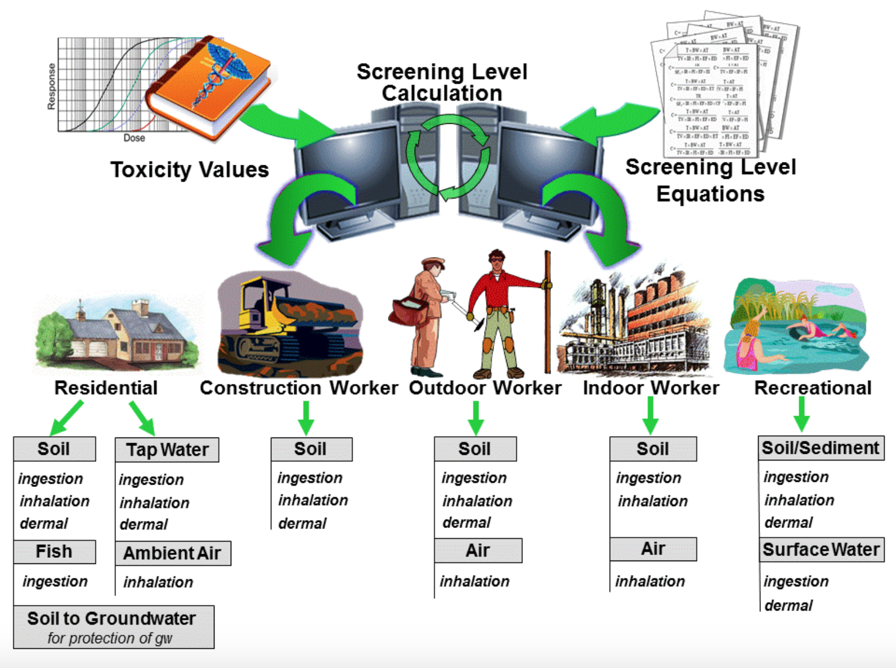

Extract RSL Data From EPA Generic Tables
The United States (US) Environmental Protection Agency (EPA) maintains a database to list all hazardous substances that have been established as human health risks. This database lists each hazardous substance and its respective Regional Screening Levels (RSLs): the maximum level of a hazardous substance that is permissible within the soil, soil vapor, indoor air, groundwater, or tap water of a site before an investigation must be conducted. Each exposure pathway (soil, indoor air, etc) has its own RSL value, and these values change based on whether the contaminated site is industrial or residential.
The purpose of the search tool below is to create a fast way to view RSL data from the EPA Generic Tables for a particular hazardous substance, or analyte. Using this tool, it will not be necessary to sift through a large PDF or Excel file, and extraneous data is filtered out.
Type in the name of an analyte with the first letter of the word capitalized (i.e. Benzene) and the table will return data for the categories listed below.
| Resident Soil (mg/kg) | Industrial Soil (mg/kg) | Resident Air (ug/m3) | Industrial Air (ug/m3) | Tapwater (ug/L) | MCL (ug/L) | Risk-based SSL (mg/kg) | MCL-based SSL (mg/kg) |
|---|---|---|---|---|---|---|---|
The MCL for an analyte represents the RSL for drinking water, whether or not the source comes from a groundwater aquifer. The SSL for each analyte is protective of groundwater. It represents an estimation of how much soil contamination will leak into groundwater, or the dilution factor. For example, if the MCL for an analyte is 0.06 mg/L and the dilution factor is 10, the SSL will be 0.6 mg/L. The MCL-based SSL is generally used for drinking water contamination and the Risk-based SSL is generally used for groundwater that is not connected to drinking water aquifers.
Important Data Limitations
This search tool is not a replacement for full site characterization. While the EPA Generic Tables provide a baseline to measure the approximate RSL for a contaminated site, they are not adequate to determine exact RSLs. These will depend on multiple factors relating to location and the extent of contamination present on a property.
The EPA website to view the full Generic Tables is called "Regional Screening Levels (RSLs) - Generic Tables." Links for the website and the table are listed here: epa.gov/risk/regional-screening-levels-rsls-generic-tables semspub.epa.gov/work/HQ/402369